FRONT ATTENTION · IoU 0.708 / 0.990
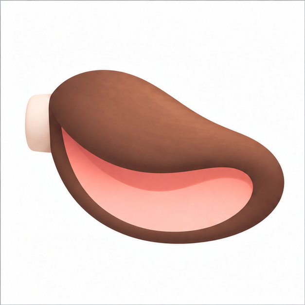
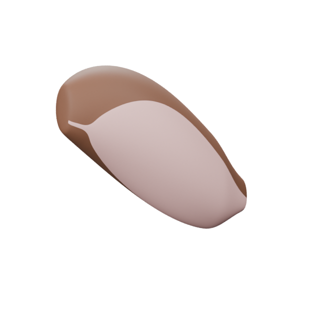
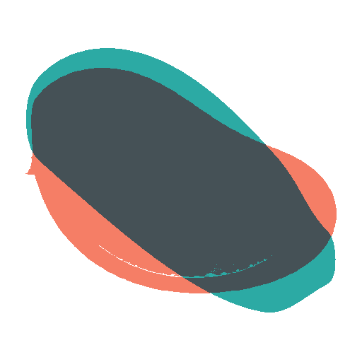
Aspect difference 15.5% · normalized silhouette diagnostic
v002 · approved local module sheets · one spatial ear and one continuous three-toe hoof architecture · integrated into the frozen v011 Carol.
The modules are integrated and reviewable. The numerical silhouette target is not met in several views; this page presents the mismatch openly. The v011 underbody is a frozen context, including its known visual limitations.
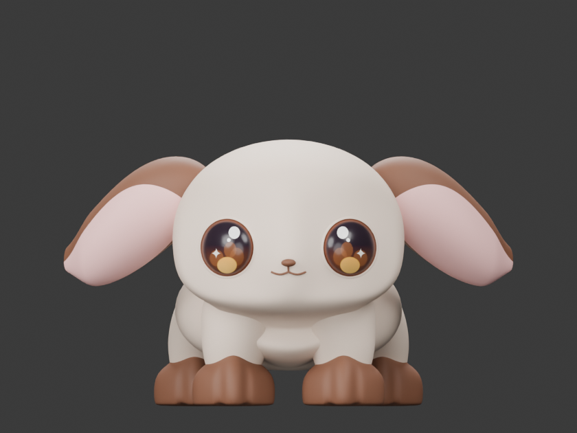
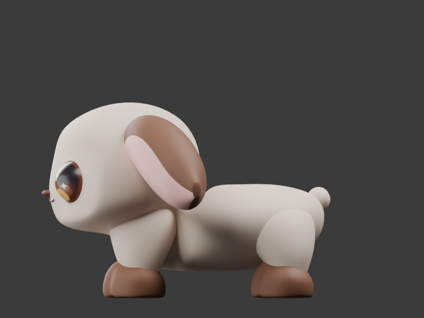
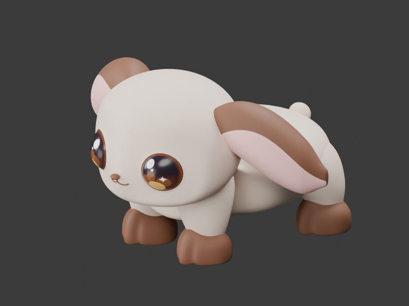
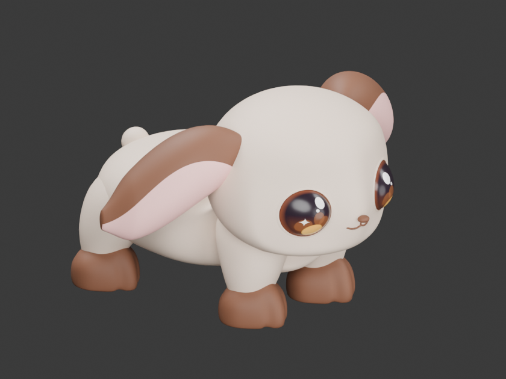



Aspect difference 15.5% · normalized silhouette diagnostic

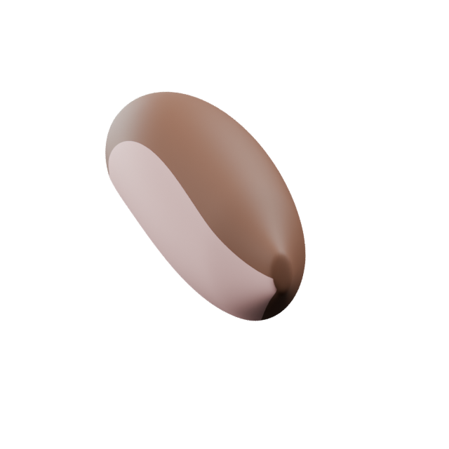
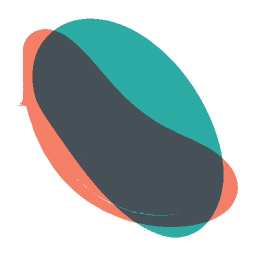
Aspect difference 21.2% · normalized silhouette diagnostic

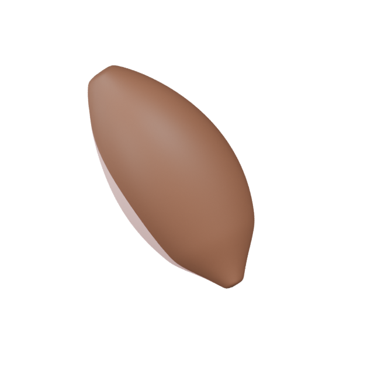
Aspect difference 22.3% · normalized silhouette diagnostic

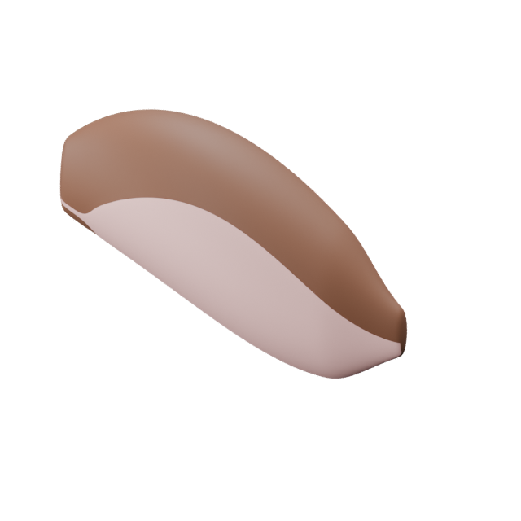
Aspect difference 14.9% · normalized silhouette diagnostic

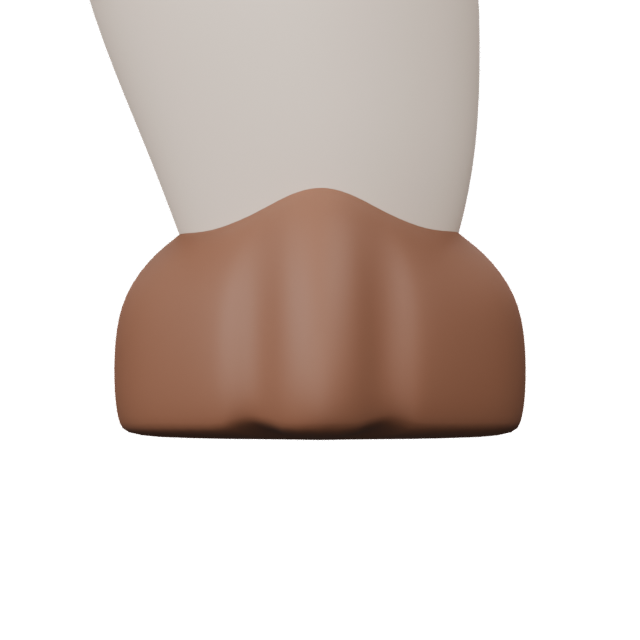
Aspect difference 8.8% · normalized silhouette diagnostic
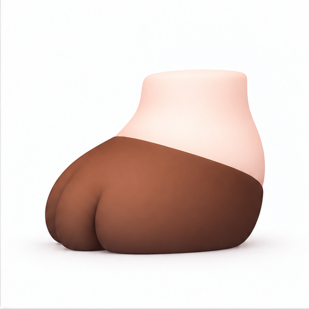
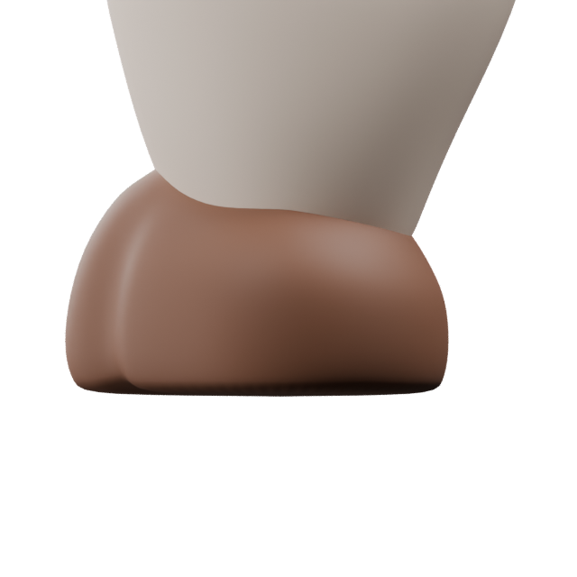
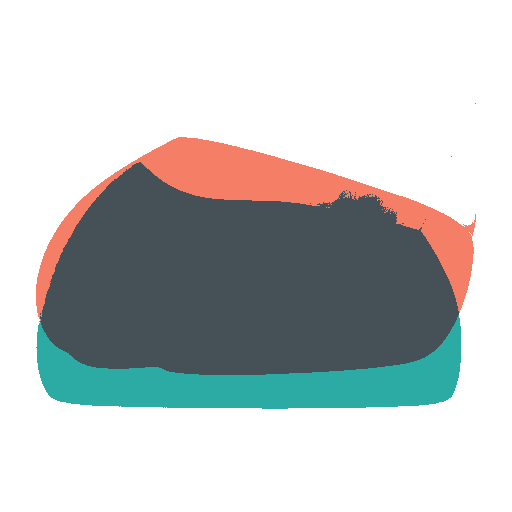
Aspect difference 22.3% · normalized silhouette diagnostic

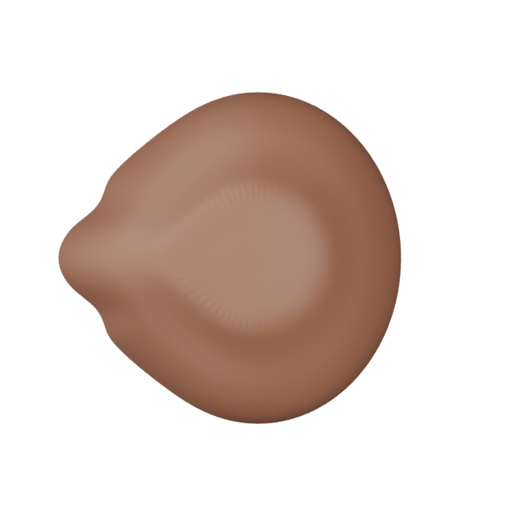
Aspect difference 7.0% · normalized silhouette diagnostic
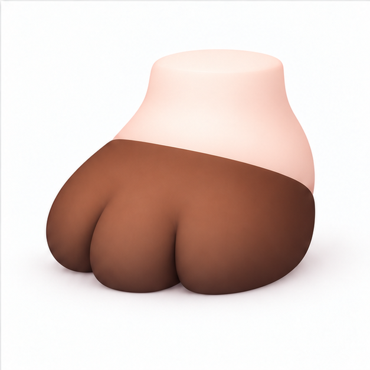
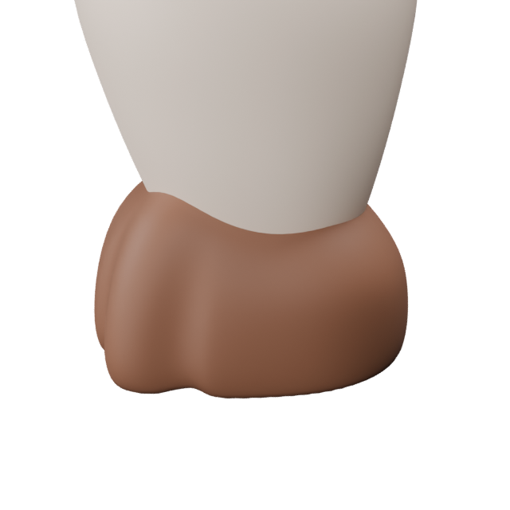
Aspect difference 16.7% · normalized silhouette diagnostic
| Ear root-to-tip centerline front angle | 25.2° from .180 H drop / .382 H span; contract ≈18° · ATTENTION |
|---|---|
| Ear full 3D bounds | X 0.2996 H · Y 0.4037 H · Z 0.3425 H |
| Front hoof width | 0.2190 H · target .219 H |
| Hind hoof width | 0.2190 H · target .219 H |
| Hoof visible crown / hidden overlap | Nominal crown .111 H; mesh continues to .150 H inside the frozen limb. The exposed visual boundary requires Human review. |
| Support centers | Fore X .390 H · hind X .920 H, unchanged from contract |
| Toe architecture | Exactly 3 toe prominences / 2 shallow clefts in each single hoof mesh |
| Ear authority | assets/grimo/source/carol/approved-3d/modules/carol-ear-module-authority.png · SHA-256 ca348f895689aefeea1844b12d7fb5a4af953e114859a552b6328311295e8563 · 1,256,564 bytes · 1254 × 1254 PNG; decoded OK |
|---|---|
| Hoof authority | assets/grimo/source/carol/approved-3d/modules/carol-hoof-module-authority.png · SHA-256 00412f74458450d785b262403192979309e2b6d4ee5f33c6b1445cb36c4dbb7a · 1,236,819 bytes · 1254 × 1254 PNG; decoded OK |
| Source blend | assets/grimo/production/carol/blender/carol-v011.blend · SHA-256 568fb4378b6ca3093ba5134d8d082f37a6723c9d5b5cf0b491a7c8e5f757aed3 |
| Candidate blend | assets/grimo/production/carol/blender/carol-hero-modules-v002.blend · SHA-256 5731cc9064fec4907e8ed8c95ce8b9ff0b0d097159328588850645ce4394744a |
| Changed objects | EAR_L, EAR_R, HOOF_FORE_L, HOOF_FORE_R, HOOF_HIND_L, HOOF_HIND_R |
| Frozen verification | 35 of 35 objects matched by name, world transform, vertex/face count, mesh digest and material slots after save/reload. |
| v011 face anchor | CENTRAL_CHASSIS mesh SHA-256 05a2bfd665787a32eb62683d169e8194d29edef24efe7454c196975a8bc970d1; EYE_L/R, EYELID_L/R and NOSE also identical. See validation.json for every record. |
Full per-object before/after records: validation.json. Per-view metric data: fit-metrics.json.